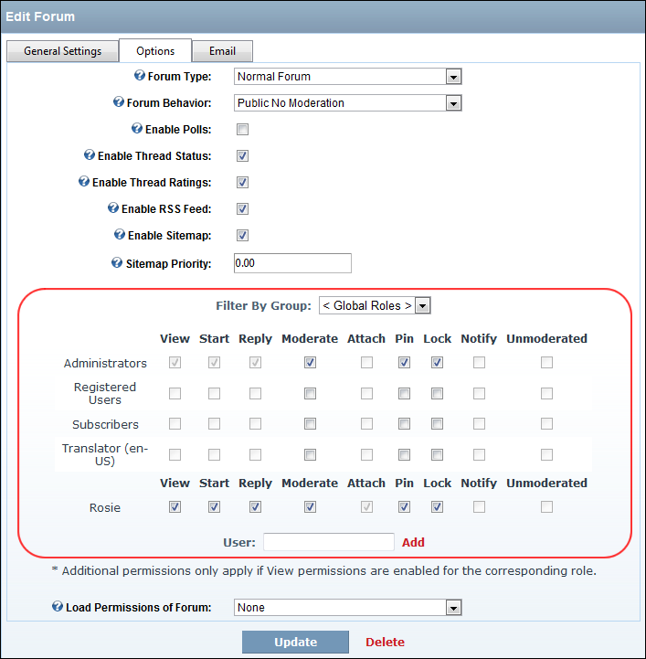

Setting Forum Permissions
How to set unique permissions for individual Forums within the Forum module.
- Complete Steps 1-4 of "Editing a Forum". This will take you to the Edit Forum page.
- Select the Options tab.
- Go to the Permissions grid.
- Optional. In the User text box, enter the username of a user that you want to grant or deny module permissions for, and then click the
 Add link. Repeat for additional usernames.
Add link. Repeat for additional usernames.
- Optional. At Filter By Group, select from the following options:
- All Roles: Select to view all roles (both global and group roles) in one single list.
- Global Roles : Select to view all roles which are not associated with a Role Group. This includes Administrators, All Users, Registered Users, and Unauthenticated Users.
- [Role Name]: Select the name of a Role Group to view the roles within that group.
- For each permission type (listed below), beside each role to grant that permission - OR - to deny that permission. Note: Some options may be disabled depending Forum Type of this forum.
- View: Select all roles that can view this forum.
- Start: Select all roles that can begin a new thread in this forum.
- Reply: Select all roles that can reply to a post in this forum.
- Moderate: Select all roles that can moderate on this forum. Administrators are enabled by default.
- Attach: Select all roles that can add an attachment to their posts for this forum. Note: Users/Roles must be granted permission to add files. ("See Modifying Folder Permissions") to the attachments folder in the site's Digital Asset Management module which is located on the Admin > File Management page. This is typically the PortalRoot/Forums/Attachments folder, unless set otherwise (See "Enabling/Disabling Attachments"). Administrators are enabled by default.
- Pin: Select all roles that can pin a thread on this forum. Pinned threads will appear at above other threads. Administrators are enabled by default.
- Lock: Select all roles that can lock a thread on this forum. Replies cannot be made to locked threads.
- Notify: Select all roles that to receive moderator notification from this forum.
- Unmoderated: Select all roles that do not require moderation.
- To set permissions for an individual, enter their username into the Username text box and click the Add link to the right of the text box. You must then complete role permissions as for Step 6.
- To set permissions based on the permissions selected on another forum, select the forum name from the Load Permissions of Forum drop down list. You can now edit these permission as shown at Step 6.
- Click the Add link.

Setting Forum Permissions